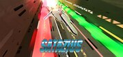

SATAZIUS
SATAZIUS
Detalles
|  | |
| Tiempo de juego | 1h 22m 0s |
| Última actividad | 14/11/2013 17:10:06 |
| Añadido | 16/08/2013 |
| Modificado | Nunca |
| Estado de finalización | Jugado |
| Librería | Steam |
| Fuente | Steam |
| Plataforma | PC (Windows) |
| Fecha de lanzamiento | 16/12/2011 |
| Puntuación de la Comunidad | 81 |
| Puntuación de la Crítica | |
| Puntuación de usuario | |
| Género | Action Indie |
| Desarrollador | ASTRO PORT |
| Editor | Henteko Doujin |
| Característica | Achievements Cloud Saves Leaderboards Partial Controller Support Single Player Trading Cards |
| Enlaces | Community Hub Discussions Guides News Store Page PCGamingWiki Achievements |
| Tag | |
Descripción
The year is 2051. Location: SATAZIUS, a long-abandoned planet.
The cruiser Agano was on patrol when it was attacked and stricken by a confederacy of space pirates that had established a base on SATAZIUS. The pirates attacked the Agano intending to steal the assault ship ‘Trafalgar’ that was stowed aboard the Agano, but the Trafalgar made a successful emergency escape.
The crew of the Trafalgar calculated the probability of successfully escaping the pirate overrun planet at 0.02%; the probability of charging into and successfully destroying the pirate base was 1%. Taking the higher probability escape plan, the crew of the Trafalgar turned their ship toward the pirate horde and began their charge into the heart of SATAZIUS.
SATAZIUS is an awesome old school side-scrolling arcade shooter by accomplished indie developer ASTRO PORT (Gigantic Army, Armed Seven, Supercharged Robot Vulkaiser), featuring an arsenal of 13 types of upgradeable weapons, power-ups, obstacles and boss encounters that arcade veterans will enjoying getting to grips with. Customize your ship by selecting two side weapons which can be cycled and deployed at any time during the action, and a charge attack to unleash massive destruction.
There is a plethora of enemy ships to shoot down, tight spaces to navigate, power ups to grab, and bonuses to acquire. Featuring great stage design, a thumping techno soundtrack, fast and outstanding action, old school graphics and giant bosses, SATAZIUS is a true throwback to old-school arcade shoot ‘em ups, replete with homages which will be instantly recognizable to fans of arcade shooters.
The cruiser Agano was on patrol when it was attacked and stricken by a confederacy of space pirates that had established a base on SATAZIUS. The pirates attacked the Agano intending to steal the assault ship ‘Trafalgar’ that was stowed aboard the Agano, but the Trafalgar made a successful emergency escape.
The crew of the Trafalgar calculated the probability of successfully escaping the pirate overrun planet at 0.02%; the probability of charging into and successfully destroying the pirate base was 1%. Taking the higher probability escape plan, the crew of the Trafalgar turned their ship toward the pirate horde and began their charge into the heart of SATAZIUS.
SATAZIUS is an awesome old school side-scrolling arcade shooter by accomplished indie developer ASTRO PORT (Gigantic Army, Armed Seven, Supercharged Robot Vulkaiser), featuring an arsenal of 13 types of upgradeable weapons, power-ups, obstacles and boss encounters that arcade veterans will enjoying getting to grips with. Customize your ship by selecting two side weapons which can be cycled and deployed at any time during the action, and a charge attack to unleash massive destruction.
There is a plethora of enemy ships to shoot down, tight spaces to navigate, power ups to grab, and bonuses to acquire. Featuring great stage design, a thumping techno soundtrack, fast and outstanding action, old school graphics and giant bosses, SATAZIUS is a true throwback to old-school arcade shoot ‘em ups, replete with homages which will be instantly recognizable to fans of arcade shooters.
Key features:
- 13 upgradeable weapons to choose from
- 4 difficult levels allowing accessibility for new players while challenging veterans as well
- Varied and exciting stage design
- Massive bosses
- Winner of the August 2008 Jikkyo Play Contents Award